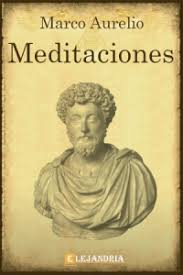

Worldreading


Descendiente de una familia de origen hispánico, Marco Aurelio nació en Roma el año 121 de nuestra era y, tras
ser adoptado por Antonio Pío, lo sucedió como emperador, ocupando el cargo desde el año 161 hasta su muerte en
180. Su reinado estuvo marcado por las numerosas y dilatadas guerras que mantuvo contra los pueblos que habitaban
en los límites del Imperio. Sin embargo, su devoción por las letras fue notoria y Marco Aurelio dedicó muchas
horas al estudio de la filosofía. Durante los descansos que le daban su intensa actividad bélica y sus
obligaciones políticas compuso las Meditaciones, una de las principales obras del estoicismo romano, pese a
estar redactadas en griego. Los doce libros en que se organiza esta obra constituyen una compilación de ideas
y sentencias breves en la que Marco Aurelio reflexiona sobre temas como los límites de la naturaleza humana, la
fugacidad del tiempo, los valores morales o la manera correcta de conducirse en la vida.
Nº de páginas:256
Editorial:RBA Bolsillo
Idioma:CASTELLANO
Año de edición:2007